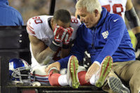

NYCDA Times
October 15, 2015
The Giants Lose Victor Cruz for the Season
Not only did the New York Giants get plummeted by the Philadelphia Eagles on Sunday night, they also lost their star wideout Victor Cruz for the remainder of the season with an MCL tear of his right knee.
Islanders Crush the Rangers to Stay Undefeated
The New York Islanders look like a new team this year winning a huge statement game, crushing the Rangers at Madison Square Garden by a score of 6-3.
San Fransisco Giants Defeat Cardinals 3-2; One Game Away From World Series
In what Giants manager Bruce Bochy calls a "miracle run," his team won game 3 in thrilling fashion in extra innings.
NFL Ends Ray Rice's Indefinate Suspension from NFL

NFL commissioner Roger Goddell woke up in a good mood today and decided to allow Ray Rice back into NFL-action. Even though the star running-back gave his girlfriend a good beating, Commissioner Goddell decided to forgive him saying "we all need a good beating once in a while."
Michael Phelps Pulled Over Intoxicated
He not only does he swim like a fish but apparantly he drinks like one too. Phelps was pulled over high on crystal meth along and was also charged with posession of an unregistered handgun.
Apple Recalls All iPhone 6s
In a developing story, Steve Jobs has risen from his grave because he was so unhappy with the design and functionality of the new iPhones.
Studies Show That Cigarettes are Addictive
Shocking new evidence now proves that cigarettes are not only addictive, but are harmful to your health.
Taking "Selfies" Now Outlawed in Several States
We've all been guilty of taking a selfie or two, but now that guilt may be literal. New York, Arkansas, and Colorado have made rapid law-changes to make selfie-taking illegal.
Smartphones Are Finally Smarter Than the Average Human
Google has finally released their new android phone that claims and proves to be smarter than most human-beings.
Starbucks to Offer Justin Beiber-Lattes

As more and more coffee-houses have been opening up throughout the country, Starbucks has parternered with Justin Beiber to create a latte based on his favorite flavors, which include marajuana, voldka and under-age teenage girls.